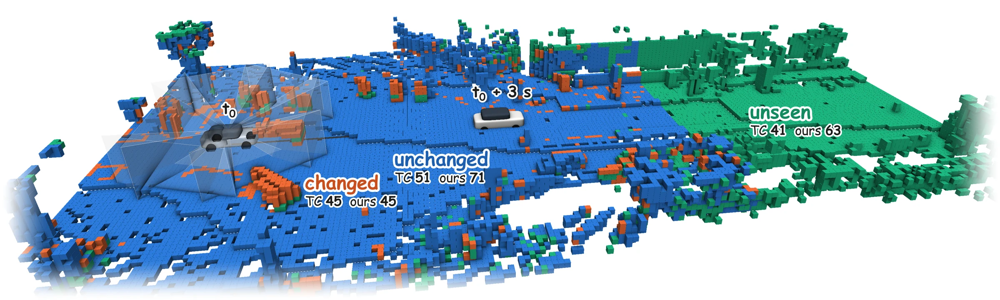
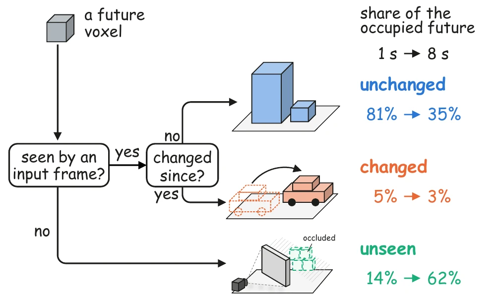
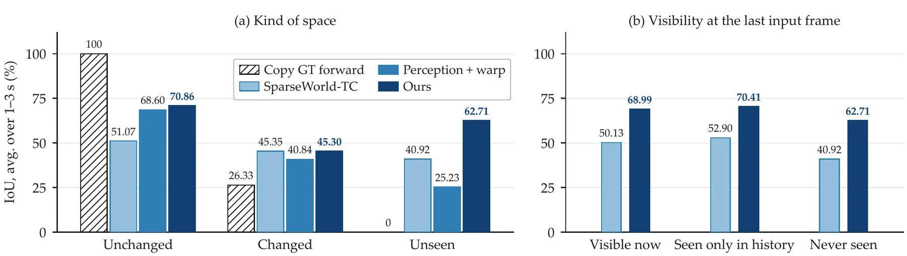
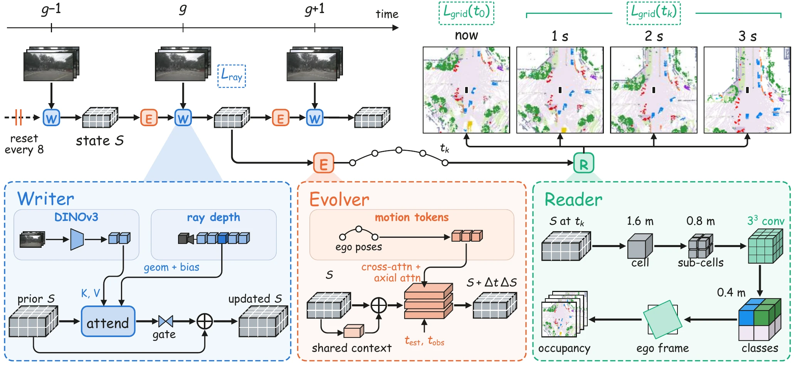
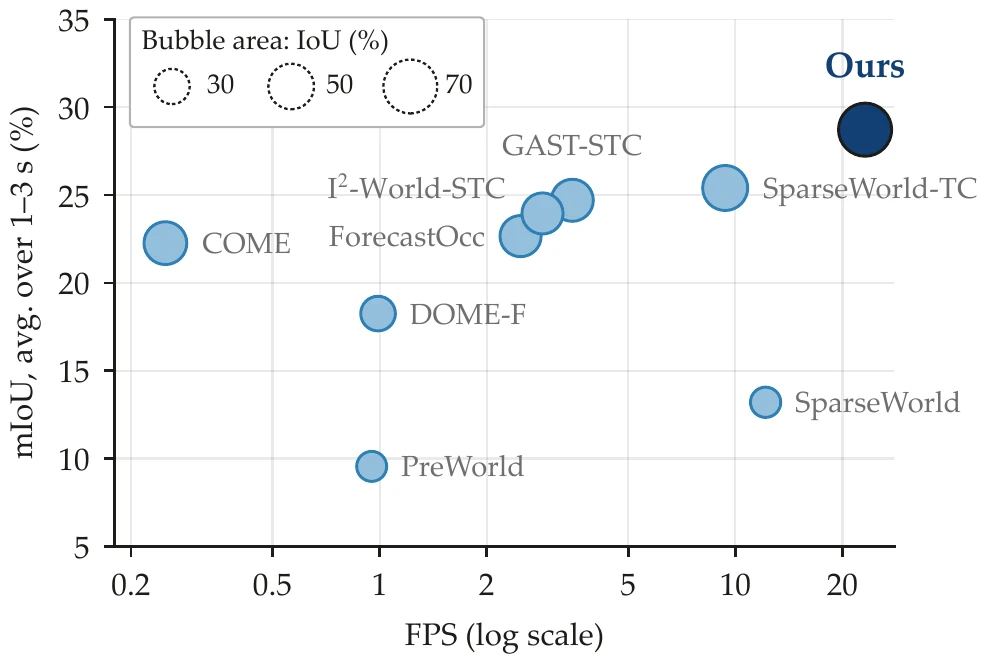

Ground-truth occupancy 3 s after the last input frame. Blue was seen in the input frames and is unchanged, orange was seen but has changed, green was never seen. Under each label: IoU of SparseWorld-TC and ours.
Motivation
Camera-based world models forget what they have seen
Over a few seconds a driving scene changes little while the vehicle moves through it, so most of the space ahead has already been seen by the cameras. Sorting the future into unchanged, changed, and unseen space shows that current camera-based world models fall short on the space they have already seen, not on forecasting what will change.


Method
Write, evolve, read a persistent world state
PersistWorld makes what it has seen its state: a 3D world state on a lattice anchored in the scene, written directly from camera images and learned end to end with the forecast. The state is updated as a stream, once per capture group, so each image is processed once and no separate perception network is needed.

WWriter
Samples image features at the projection of every sub-cell and writes the evidence of each new frame into the state, guided by a predicted ray depth.
EEvolver
Carries the state to any queried time along the ego trajectory. One model serves every horizon from 1 to 8 s.
RReader
Decodes the state into 3D semantic occupancy at 0.4 m in the queried ego frame, now and for every forecast.
Interactive
Explore the forecasts
Pick a validation scene and a last input frame t₀, then move the horizon. Errors colours each forecast against the ground truth: grey voxels are right, red ones were missed, amber ones are false. The three views share one camera: drag to orbit, scroll to zoom. Only voxels inside the camera mask of the target frame, the evaluated region, are drawn.
Results
State of the art on Occ3D-nuScenes, at twice the speed
| Camera-based, 1–3 s | mIoU | IoU | FPS |
|---|---|---|---|
| I²-World-STC | 23.95 | 40.63 | 2.87 |
| GAST-STC | 24.70 | 42.47 | 3.48 |
| SparseWorld-TC | 25.40 | 48.69 | 9.36 |
| PersistWorld (ours) | 28.72 | 67.82 | 23.15 |
| Camera-based, 1–8 s | mIoU | IoU | |
|---|---|---|---|
| SparseWorld-TC | 19.65 | 43.15 | |
| PersistWorld (ours) | 23.86 | 64.73 |
-STC: forecasts from the occupancy predicted by STCOcc; their FPS includes that perception network. Speeds on one A800, batch size one.

Video
PersistWorld in 75 seconds
Citation
BibTeX
@article{wang2026persistworld,
title = {Write, Evolve, Read: Streaming Cameras into a Persistent
World State for 4D Occupancy Forecasting},
author = {Wang, ZiAn and Wang, Tianyi and Chen, Zhihao and Cui, Manni
and Chen, Junkai and Chen, ZhiJin and Liu, Ruiqi and Wu, Junfei
and Zhang, Huanyu and Wu, Shu},
journal = {arXiv preprint arXiv:2611.30573},
year = {2026}
}